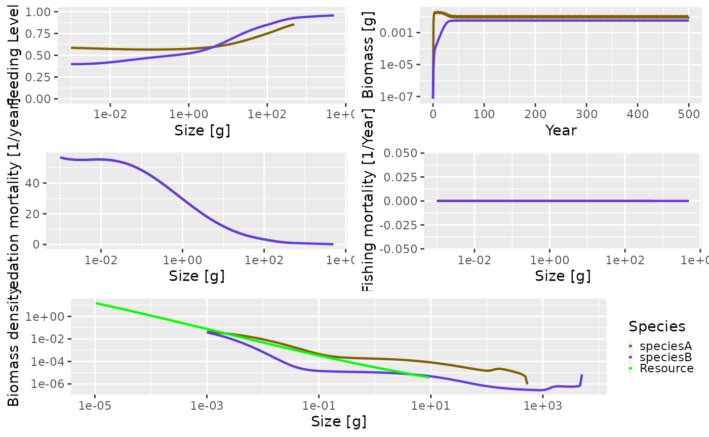

Load libraries
Mizer 2.0.3 or later version is needed to use the background extension.
A. First and best option: download the most updated version of the package directly from GitHub using devtools::install_github(“sizespectrum/mizer”)
B. Second option: merge upstream master with your branch and upload code from local repository
Set up multispecies model
All parameters are made up
species_params = data.frame(species = c("speciesA", "speciesB"), w_inf = c(500, 5000), k_vb =c(0.8, 0.3), w_min = c(0.001, 0.001),beta=c(1000,100),sigma=c(3,3)) # available PP to species species_params$interaction_resource<-c(1,0.5) # create the param object # note: some def values are different from old mizer (e.g. kappa) params<-newMultispeciesParams(species_params, no_w = 200,kappa=0.0001) # run projections: sim<-project(params, t_max = 500, effort = 0) plot(sim)

Create parameters that are derived from user-input parameters
Plankton forcing through time
We want to enable the background resource to change through time via external forcing files obtained form analysis of CMIP6 climate models. We have external code to create these estimates. So here the user will only need to alter how: kappa, lambda, r_pp change through time. For now, the background resource is only plankton but later this could type of forcing could also be used for the benthic resource or detritus.
Let’s start by having a look at how the resource is structured in params. Then we make up a time series of changing plankton parameters through time. For this to work in mizer it will need to have the same timesteps as rest of the model. Or should we use the resource_dynamics function?
# try with Phoebe's pre-prepared n_pp ##### set up new resource forcing "function" - just changes to different timeslot in the n_pp_array array plankton_state <- new.env(parent = emptyenv()) plankton_state$time <- 1 plankton_forcing <- function(params,dt=0.1,...) { return(params@other_params$n_pp_array[plankton_state$time,]) plankton_state$time <- plankton_state$time + 1 } ### set up array of n_pp - currently just intial values times=0:500 sizes=names(params@initial_n_pp) n_pp_array <- array(NA, dim = c(length(times), length(sizes)), dimnames = list(time = times, w = sizes)) # keep constant #for (i in 1:501) n_pp_array[i,] <- params@initial_n_pp # add a slight amount of variation in intercept each timestep for (i in 1:501) n_pp_array[i,] <- params@initial_n_pp*runif(1,0.1,1.9) params@other_params$n_pp_array <- n_pp_array params@resource_dynamics <- "plankton_forcing" params <- setParams(params) #check # plot(params@w_full,params@other_params$n_pp_array[1,],log="xy",typ="l") # for (i in 2:501) points(params@w_full,params@other_params$n_pp_array[i,],typ="l",col="grey")
Create parameters that must be input by the user
For each species in the model, users must input the minimum and maximum values of its thermal tolerance range. These values are used to scale temperature effects to values ranging from 0 - 1.
Create parameters that are derived from user-input parameters
To scale the effect of temperature on encounter rate to a value ranging from 0 - 1, it is necessary to divide by the maximum possible value for each species. To scale the effect of temperature on metabolism to a value ranging form 0 - 1, it is necessary to subtract the minimum vaule for each species and then divide by the range. This requires a bit of straightforward arithmetic, and users could do this on their end if they’re so inclined. hese parameters handle that math so the user doesn’t have to.
We’re also going to create a parameter called t_idx that will help with the simulations. This parameter will provide the correct time index for temperature during the simulations.
params@species_params$encounter_scale <- rep(NA, length(params@species_params$temp_min)) for (indv in seq(1:length(params@species_params$temp_min))){ # Create a vector of all temperatures each species might encounter temperature <- seq(params@species_params$temp_min[indv], params@species_params$temp_max[indv], by=0.1) # Find the maximum value of the unscaled effect of temperature on encounter rate for each species params@species_params$encounter_scale[indv] <- max((temperature) * (temperature - params@species_params$temp_min[indv]) * (params@species_params$temp_max[indv] - temperature)) } # Determine the minimum, maximum, and range of value for the effect of temperature on metabolism min_metab_value <- (exp(25.22 - (0.63/((8.62e-5)*(273+params@species_params$temp_min))))) max_metab_value <- (exp(25.22 - (0.63/((8.62e-5)*(273+params@species_params$temp_max))))) params@species_params$metab_min <- min_metab_value params@species_params$metab_range <- max_metab_value - min_metab_value # Time indexing parameter # This will be added to t to convert the year into an index for the ocean_temp array if (min(times) == 0) { other_params(params)$t_idx = 1 } else if (min(times) == 1) { other_params(params)$t_idx = 0 } else { other_params(params)$t_idx = -(min(times) - 1) }
Create an ocean_temp parameter
Here, we’ll create arbitrary time series of increasing ocean temperature for each species. Alternatively, and more probably, time series of temperature could be informed by past data or climate model output.
# Create temperature array and fill it times <- 0:500 species <- params@species_params$species ocean_temp_array <- array(NA, dim = c(length(times), length(species)), dimnames = list(time = times, sp = species)) temp_inc <- 0 for (i in 1:501){ ocean_temp_array[i,] <- c(17 + temp_inc) temp_inc <- temp_inc + 0.01 } # Add temperature as a parameter other_params(params)$ocean_temp <- ocean_temp_array
Create the new rate functions
Temperature will be added to the fuctions to determine encounter rate and energy available for growth and reproduction.
To scale encounter rate with temperature, we’re essentially taking a temperature-dependent proportion of the value calculated by the mizerEncounter function. If species are at their thermal optimum, we take the full value. Elsewhere in their thermal range, we take a proportion that goes to zero at the limits of species thermal tolerence.
therMizerEncounter <- function(params, n, n_pp, n_other, t, ...) { # Using t+1 to avoid calling ocean_temp[0,] at the first time step temp_at_t <- params@other_params$other$ocean_temp[t + params@other_params$other$t_idx,] # Calculate unscaled temperature effect using a generic polynomial rate equation unscaled_temp_effect <- temp_at_t * (temp_at_t - params@species_params$temp_min) * (params@species_params$temp_max - temp_at_t) # Scale using new parameter scaled_temp_effect <- unscaled_temp_effect / params@species_params$encounter_scale # Set the encounter rate to zero if temperature is outside species' thermal tolerance above_max <- which(temp_at_t > params@species_params$temp_max) below_min <- which(temp_at_t < params@species_params$temp_min) if(length(above_max) > 0) scaled_temp_effect[above_max] = 0 if(length(below_min) > 0) scaled_temp_effect[below_min] = 0 # Calculate maximum possible encounter rate max_encounter <- mizerEncounter(params, n = n, n_pp = n_pp, n_other = n_other, ...) # Apply temperature effect return(max_encounter*scaled_temp_effect) }
To calculate the effect of temperature on metabolim, we use an Arrhenius function to scale the cost of metabolism. When species are at their thermal maximum, the cost of metabolism is at its maximum. When species are at their thermal minimum, the cost of metabolism is at its minimum.
therMizerEReproAndGrowth <- function(params, n, n_pp, n_other, t, encounter, feeding_level, ...) { # Using t+1 to avoid calling ocean_temp[0,] at the first time step temp_at_t <- params@other_params$other$ocean_temp[t + params@other_params$other$t_idx,] # Arrhenius equation unscaled_temp_effect <- (exp(25.22 - (0.63/((8.62e-5)*(273+temp_at_t))))) # Arrhenius equation scaled to a value between 0 and 1 temp_effect_metabolism <- (unscaled_temp_effect - params@species_params$metab_min) / params@species_params$metab_range # Set the EReproAndGrowth to zero if temperature is outside species' thermal tolerance Emultiplier <- rep(1, length(params@species_params$species)) above_max <- which(temp_at_t > params@species_params$temp_max) below_min <- which(temp_at_t < params@species_params$temp_min) if(length(above_max) > 0) Emultiplier[above_max] = 0 if(length(below_min) > 0) Emultiplier[below_min] = 0 # Apply scaled Arrhenius value to metabolism (sweep((1 - feeding_level) * encounter, 1, params@species_params$alpha, "*", check.margin = FALSE) - params@metab*temp_effect_metabolism)*Emultiplier }
Update the functions
params <- setRateFunction(params, "Encounter", "therMizerEncounter") params <- setRateFunction(params, "EReproAndGrowth", "therMizerEReproAndGrowth")